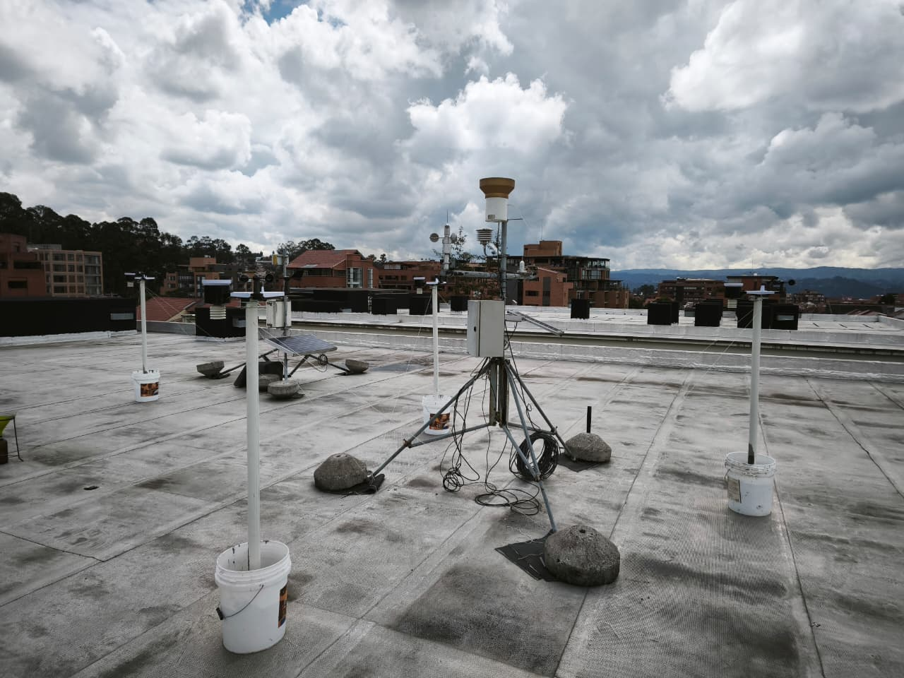
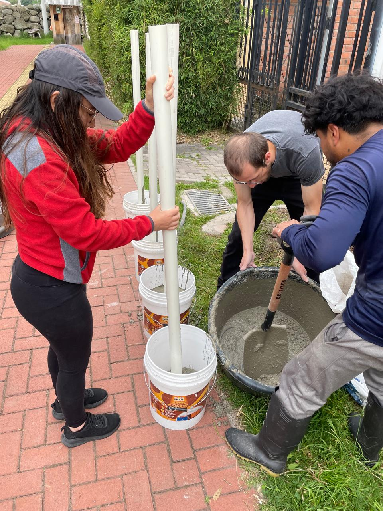
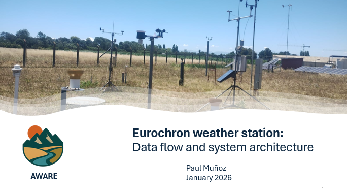
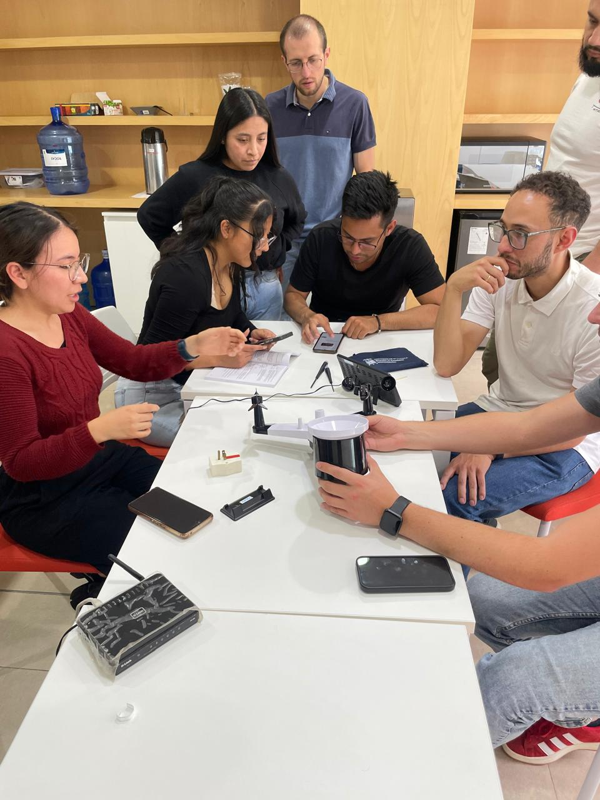

February 23, 2026 – Universidad de Cuenca, Ecuador
Prof. Paul Muñoz from Universidad de Concepción and co-coordinator from Vrije Universiteit Brussel visited Universidad de Cuenca for a kick-off meeting with the local team from both Universidad de Cuenca and Universidad del Azuay. The meeting focused on coordinating the first project activities, meeting the three master's students benefiting from the project scholarships, and planning the next steps with local stakeholders. Discussions also included the installation of sensors purchased for monitoring hydrometeorological variables in both urban and rural case studies.


February 10, 2026 – Universidad de Cuenca, Ecuador
Prof. Paul Muñoz from Universidad de Concepción and co-coordinator from Vrije Universiteit Brussel visited Universidad de Cuenca for a kick-off meeting with the local team from both Universidad de Cuenca and Universidad del Azuay. The meeting focused on coordinating the first project activities, meeting the three master's students benefiting from the project scholarships, and planning the next steps with local stakeholders. Discussions also included the installation of sensors purchased for monitoring hydrometeorological variables in both urban and rural case studies.


January 15, 2026 – Online
A virtual workshop was conducted by Prof. Paul Muñoz to introduce low-cost sensors for monitoring hydrometeorological variables in urban and rural case studies. The hands-on session included an explanation of the sensors, the communication protocols used to transmit data in real time, and practical recommendations for installing and operating the sensors in the field.


September 26, 2025 – VUB, Brussels
A visit was made to Prof. Ann Van Griensven and the Department of Water and Climate (HYDR) at Vrije Universiteit Brussel. The discussions focused on ongoing collaborations, research synergies, and upcoming joint initiatives under the project framework.

September 25, 2025 – KU Leuven, Belgium
A visit was conducted with Prof. Anne Gobin at KU Leuven. The meeting centered on exploring collaboration opportunities, exchange of methodologies, and potential alignment of research activities between both institutions.

September 1, 2025 – Ecuador
Official launch of the project.
July 2025 – Kick-off preparations
Initial warming-up activities began with partner coordination and scholar selection. These early steps were essential for ensuring the readiness of all components for the formal project start in September.